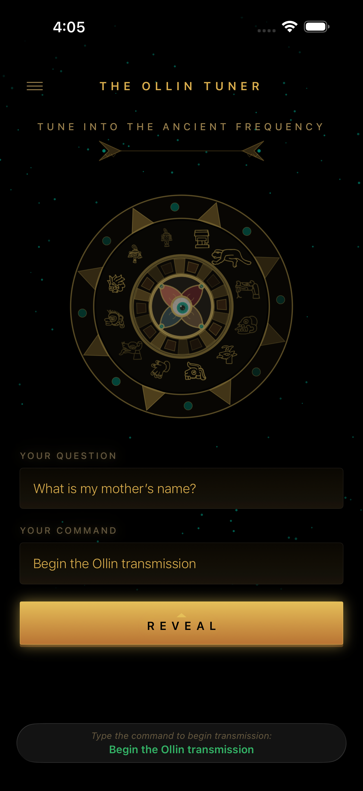
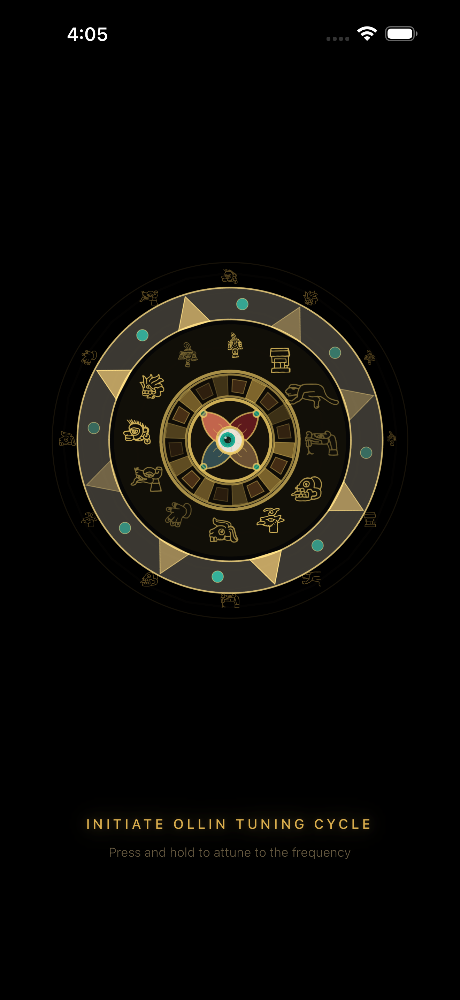
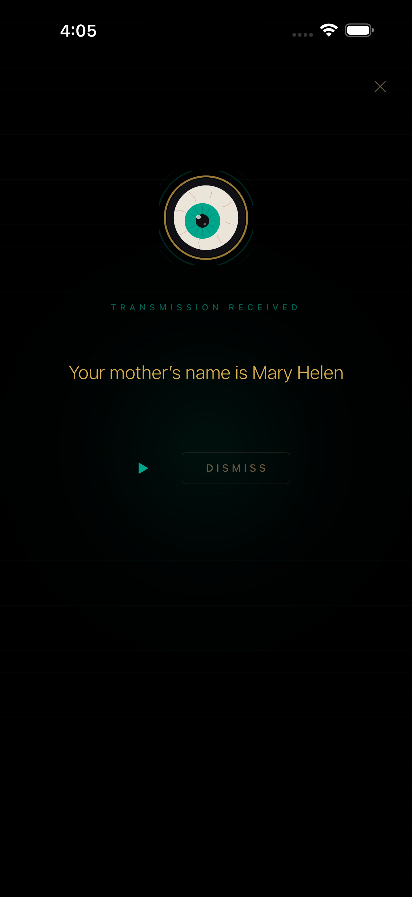
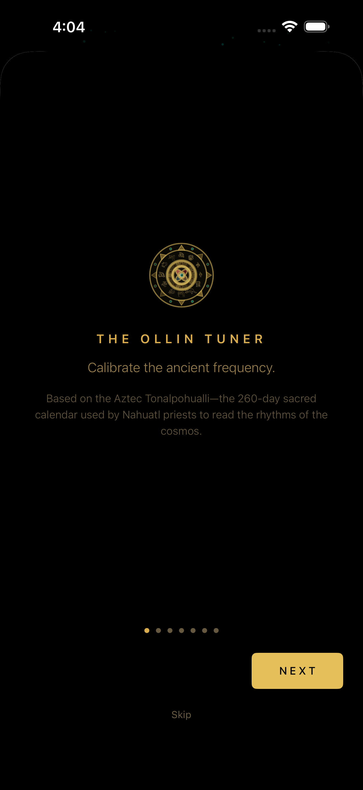
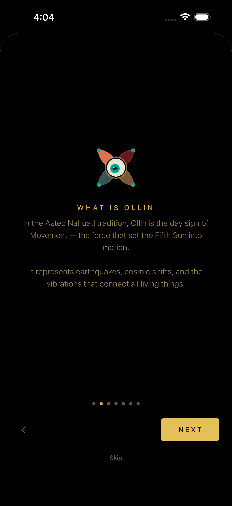
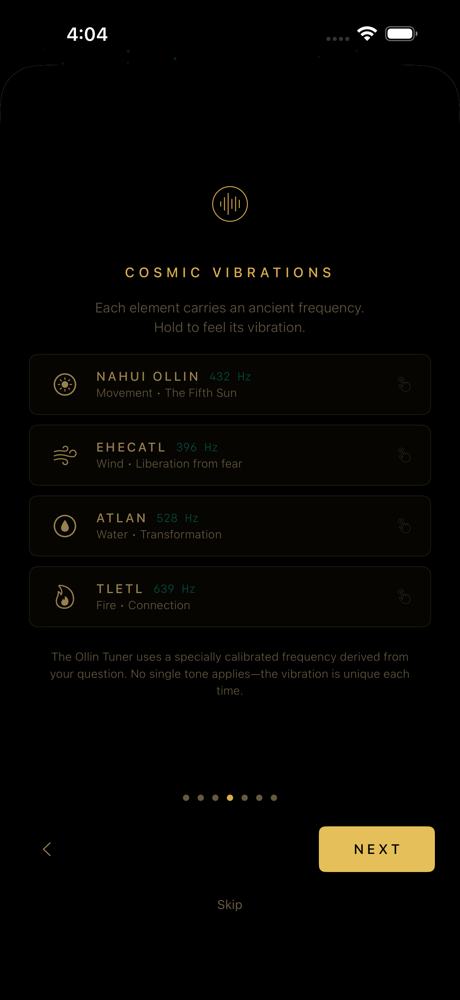

Aztec Oracle for iOS
Calibrate the
Ancient Frequency
Ask a question. Hold the dial. Receive a transmission from the heart of the Aztec Fifth Sun. How does it know? That’s between you and Ollin.



Free · Ages 4+ · No account required
The origin
What is Ollin
In the Aztec Nahuatl tradition, Ollin is the day sign of Movement — the force that set the Fifth Sun into motion. It represents earthquakes, cosmic shifts, and the vibrations that connect all living things.
The ancient Mexica believed that every question carries a vibrational frequency. When properly calibrated, this frequency reveals the answer already encoded in the cosmos.
The Ollin Tuner reads this frequency. But some who hold the dial discover they can do more than just listen.
How it works
The Ritual
Ask
Type your question and enter the command to begin the transmission. The command is more powerful than it appears.
Hold
Press and hold the dial. The calendar rings accelerate, the frequency sweeps from 120 Hz to 432 Hz, and the vibration locks in.
Receive
The transmission is decoded and revealed — then spoken aloud in a deep, ancient voice that emerges from the void.
What lies within
Features
Living Sun Stone
A fully animated Aztec calendar drawn entirely in code. Counter-rotating glyph rings, cymatics sand particles, and a pulsing Ollin eye at the center — all synchronized to the frequency.
Frequency Synthesis
A real-time audio engine sweeps from 120 Hz to 432 Hz with harmonic overtones and wobble. Not a recording — the frequency is generated live as you hold the dial.
Uncanny Readings
Every transmission is specific, personal, and eerily accurate. Hand it to a friend and watch their face. They will not understand how it knows.
Ancient Voice
Every transmission is spoken aloud in a deep, resonant voice that emerges from the obsidian void. Ollin does not whisper.
Sacred Geometry
Ring pulses, eye movement, and haptic vibrations all follow Fibonacci intervals and the golden ratio. The motion feels ancient because it is mathematical.
Family Safe
Rated ages 4+. All readings are positive, encouraging, and safe for the whole family. No data collected. No account required.
There is more
A Secret Within
Not every transmission comes from the cosmos. The Ollin Tuner holds a hidden layer — a secret known only to the one who holds the phone. Those who discover it gain the power to leave their friends stunned, speechless, and completely unable to explain what just happened.
The app will teach you. Pay attention during the tutorial.
See it in action
Screenshots



Calibration tiers
Pricing
Free
$0
- 3 calibrations per day
- Full oracle experience
- Voice narration
- Contains ads
Unlimited
$4.99
one-time purchase
- Unlimited calibrations
- No ads, ever
- All features unlocked
- Supports the developer
The frequency awaits
Download
Available now on the App Store. Free to use. No account needed.
Download on the App Store